Here’s how to get all setup with AAD access tokens in Postman.
Step-by-Step Walkthrough Video
Get Azure Active Directory Id
1. Go to the Azure Portal, click on Azure Active Directory, then click Properties.

Copy “Directory ID” to a temp location - this will be your “tenantId”
Create an Azure Active Directory App
1. Go to Azure Portal and click on Azure Active Directory, then click on App registrations, then click Add.
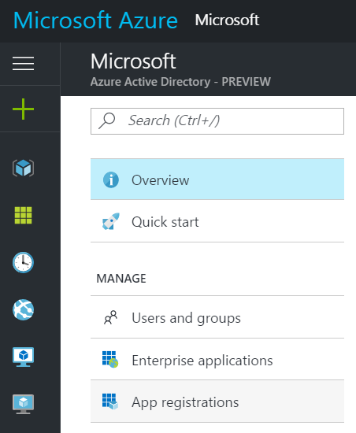
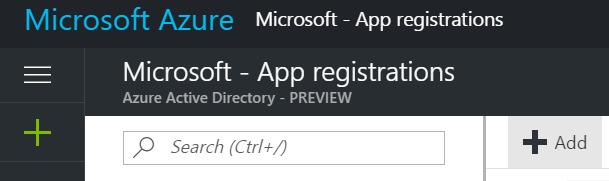
2. Enter name, select “Web app / API” type and enter anything into Redirect URI (I entered http://localhost), click Create.
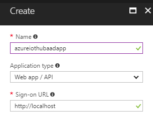
3. Select “My apps” in the filter dropdown, find the app you just created and click on it.
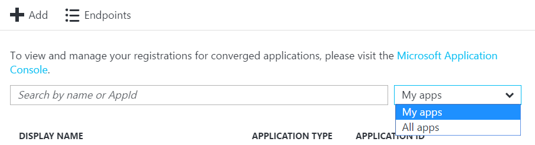
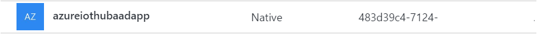
4. Find “Application ID” in the main blade.
Copy “Application ID” to a temp location - this will be your “clientId”
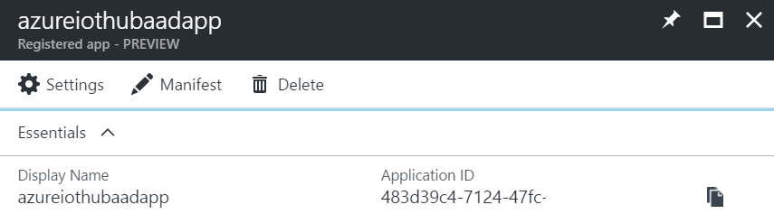
5. Go to Settings -> Keys and create a new key, select Never Expires, click Save.
Copy this key to a temp location. - this will be your “clientSecret”
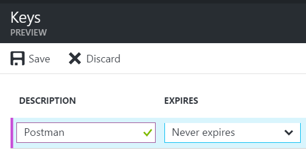
Give Azure Active Directory App Permission to Azure Subscription
1. Go to Azure Portal, click Subscriptions, then click on the Subscription that contains the assets you want to access with the App. For example, I need to use the access token to access IoT Hubs, so I’ll click on the Subscription that contains those IoT Hubs.
2. Click on Access control (IAM) and then click Add
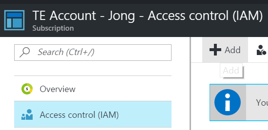
3. Select the “Contributor” role
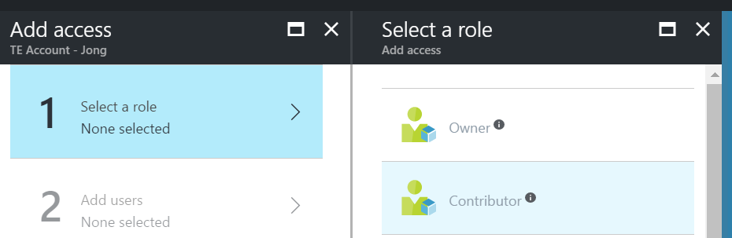
4. Add the AAD app as a user and click Select, then click OK.
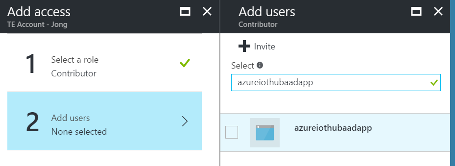
You will then see the app listed as a user.
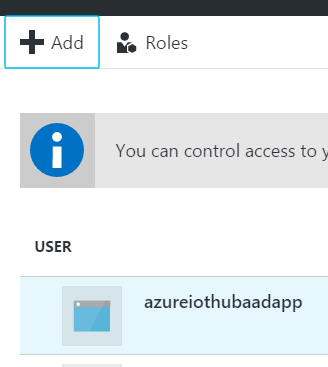
Create Postman Request
1. Open Postman Desktop app (http://getpostman.com)
2. Set up a new Environment by clicking on the gears icon in the upper right, then enter the following keys using the values you copied to a temp location earlier.
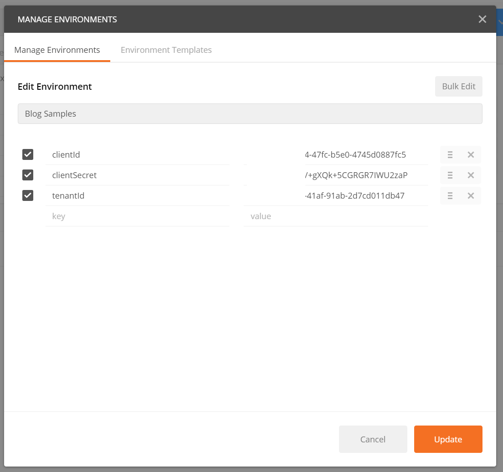
3. Select that Environment in the Environment dropdown
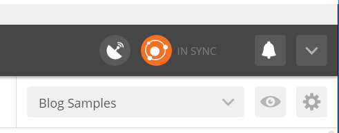
4. Enter the following url into the textbox and select POST
|
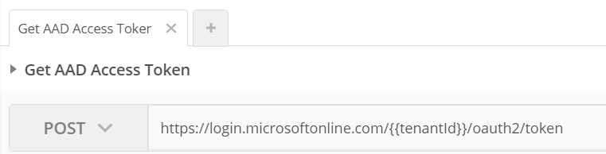
5. Click on the “Body” tab, select “x-www-form-urlencoded” and enter the following 4 values:
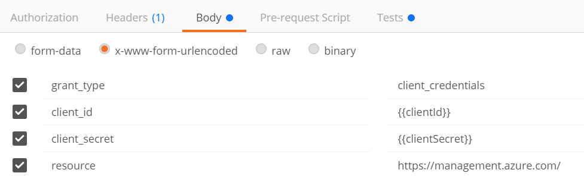
grant_type: client_credentials
client_id: {{clientId}}
client_secret: {{clientSecret}}
resource: https://management.azure.com/
6. Click on the Headers tab and make sure Content-Type header is there and is equal to application/x-www-form-urlencoded
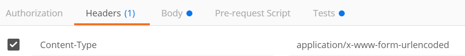
7. Click on the Tests tab and enter the following code to save the access_token returned to an Environment variable.
|
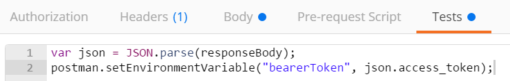
8. Click “Send” and you will now see the response output.
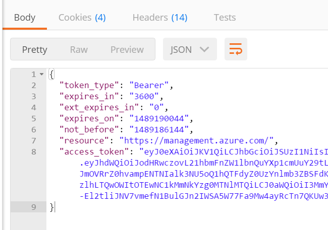
If you get the following error, that means you didn’t give the AAD app permissions to your subscription. Please see above for instructions on how to do that.
|
9. Click on the “Eye” icon in the upper right and you will now see the “bearerToken” environment variable saved and ready for use in subsequent requests.
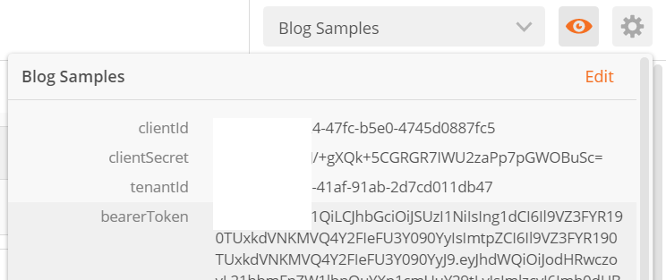
Use Token in Subsequent Requests
Now that you have the token stored in an environment variable you can use it as a bearer token.
To get the variable just use this code:
|
Or double curlys like so:
|
Here’s an example how to use the bearerToken in the Authorization header
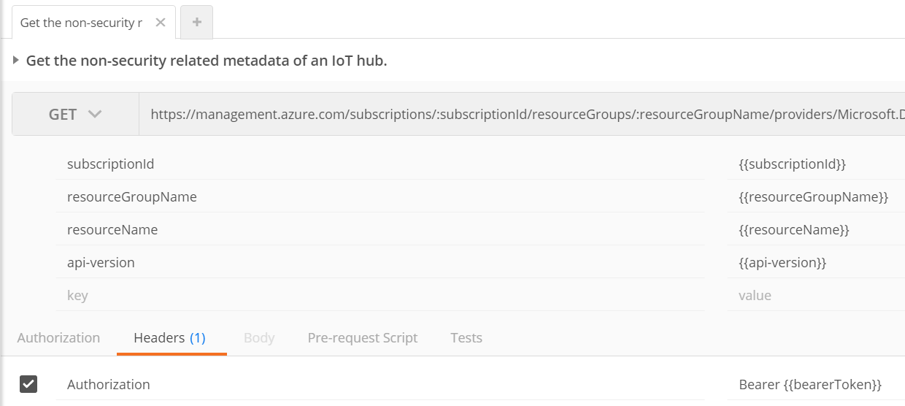
Jon